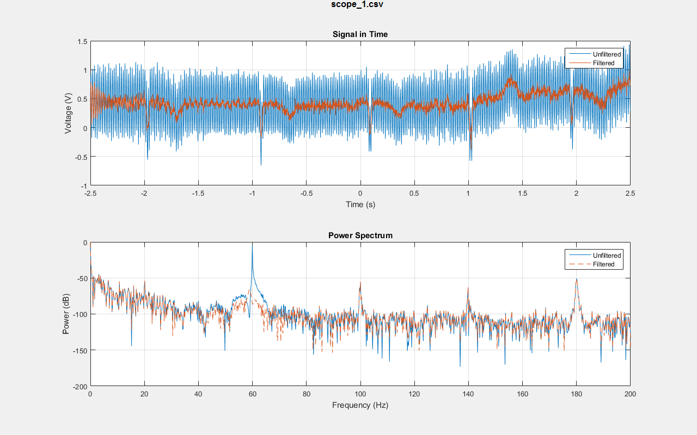
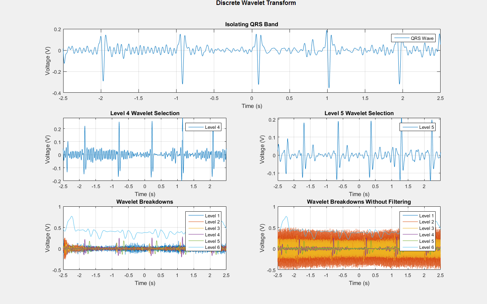
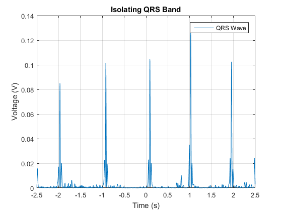

Contents
clc; close all; clear; format compact;
Steps
Load and visualize the signal Preprocess the signal to remove artifacts Perform wavelet based time-frequency analysis to identify features
Load the signal
%parfor file = 1:7 file = 1; fileName = sprintf('scope_%d.csv', file); fileID = fopen(fileName,'r'); specs = strsplit(fgetl(fileID), ','); units = strsplit(fgetl(fileID), ','); formatSpec = '%f,%f'; sizeA = [2 Inf]; A = fscanf(fileID,formatSpec,sizeA); fclose(fileID); % Assuming sampling frequency is static per data set Fs = floor(1/(A(1,2) - A(1,1))); ekg = A(2:2,:); t = A(1:1,:); % The power spectral density of the original signal shows that the obvious % expected line frequency at 60 Hz is overpowering.
Filter Signal
Lovely tutorial https://www.mathworks.com/help/signal/ug/remove-the-60-hz-hum-from-a-signal.html
notchFilt = designfilt('bandstopiir', 'FilterOrder', 6, 'HalfPowerFrequency1', 59, ... 'HalfPowerFrequency2', 61, 'DesignMethod','butter', 'SampleRate', Fs); ekgSampleFiltered = filtfilt(notchFilt, ekg);
Filtered Signal -Comparison
figure('position', [0, 0, 1280, 800]); p = uipanel('Parent',gcf,'BorderType','none'); p.Title = fileName; p.TitlePosition = 'centertop'; p.FontSize = 12; p.FontWeight = 'bold'; ax1 = subplot(2,1,1,'Parent',p); plot(ax1, t,ekg,t,ekgSampleFiltered) ylabel('Voltage (V)') xlabel('Time (s)') title(['Signal in Time']) legend('Unfiltered','Filtered') grid [pekg,fekg] = periodogram(ekg,[],[],Fs); [pnotch,fnotch] = periodogram(ekgSampleFiltered,[],[],Fs); ax2 = subplot(2,1,2,'Parent',p); plot(ax2, fekg,20*log10(abs(pekg)),fnotch,20*log10(abs(pnotch)),'--') ylabel('Power (dB)') xlabel('Frequency (Hz)') title('Power Spectrum') legend('Unfiltered','Filtered') grid saveas(gcf,[fileName '.jpg']); %end % for parfor
Further Exploration
Adapted from https://www.mathworks.com/matlabcentral/fileexchange/61565-feature-detection-in-signals-using-wavelets?focused=7388009&tab=function Center of the QRS ranges from 5 Hz to 22 Hz We will extract this using the Discrete Wavelet Transform
% Partition the signal into different bands % extractQRSband % Level 4 Details ==> 11 Hz - 22 Hz % Level 5 Details ==> 5 Hz - 11 Hz level = 5; stLevl = 4; endLevel =5; wt = modwt(ekgSampleFiltered,level); wtrec = zeros(size(wt)); wtrec(stLevl:endLevel,:) = wt(stLevl:endLevel,:); ecgQRSBand = imodwt(wtrec,'sym4'); figure('position', [0, 0, 1280, 800]); p = uipanel('Parent',gcf,'BorderType','none'); p.Title = 'Discrete Wavelet Transform'; p.TitlePosition = 'centertop'; p.FontSize = 12; p.FontWeight = 'bold'; ax1 = subplot(3,2,[1 2],'Parent',p); plot(ax1, t,ecgQRSBand) ylabel('Voltage (V)') xlabel('Time (s)') title(['Isolating QRS Band']) legend('QRS Wave') grid ax2 = subplot(3,2,5,'Parent',p); plot(ax2, t, wt(1,:), ... t, wt(2,:), ... t, wt(3,:), ... t, wt(4,:), ... t, wt(5,:), ... t, wt(6,:)); ylabel('Voltage (V)') xlabel('Time (s)') title('Wavelet Breakdowns') legend('Level 1','Level 2','Level 3','Level 4','Level 5','Level 6') grid ax3 = subplot(3,2,3,'Parent',p); plot(ax3, t,wt(4,:)), axis tight ylabel('Voltage (V)') xlabel('Time (s)') title(['Level 4 Wavelet Selection']) legend('Level 4') grid ax3 = subplot(3,2,4,'Parent',p); plot(ax3, t,wt(5,:)), axis tight ylabel('Voltage (V)') xlabel('Time (s)') title(['Level 5 Wavelet Selection']) legend('Level 5') grid wtOriginal = modwt(ekg,level); ax4 = subplot(3,2,6,'Parent',p); plot(ax4, t, wtOriginal(1,:), ... t, wtOriginal(2,:), ... t, wtOriginal(3,:), ... t, wtOriginal(4,:), ... t, wtOriginal(5,:), ... t, wtOriginal(6,:)); ylabel('Voltage (V)') xlabel('Time (s)') title('Wavelet Breakdowns Without Filtering') legend('Level 1','Level 2','Level 3','Level 4','Level 5','Level 6') grid linkaxes([ax2,ax4],'y') % It's interesting to note here that if you wavelet transform the original % ekg signal you will see a lot of noise from the power line, but the other % sources of noise are extremely small in the other bands aside from L6. % The largest source of noise and offset of the signal is from signals near % DC. All the other bands are surprisingly zero mean! % If we are doing the wavelet transform, we don't really need to filter out % the 60 Hz since it doesn't overlap with our signal. The wavelet transform % serves as a "perfect" notch filter for each frequency band. % For our signals, it does look like Level 4 and Level 5 contain the same % signal but with a slight lag between the two.
Attempt to extract heart rate
Detect R-peaks using a peak detection approach
ecgQRSBandSq = ecgQRSBand.^2; figure; plot(t,ecgQRSBandSq) ylabel('Voltage (V)') xlabel('Time (s)') title(['Isolating QRS Band']) legend('QRS Wave') grid rThreshold = 0.08; % Empirical value determined by examining the graph [ecgQRSBandSqPks,ecgQRSBandSqlocs] = findpeaks(ecgQRSBandSq, ... 'MinPeakHeight',rThreshold,... 'MinPeakDistance',60); hr = mean(60./diff(t(ecgQRSBandSqlocs))); fprintf('Avg. Heart rate obtained after Wavelet QRS band isolation:: %0.2f bpm\n',hr);
Avg. Heart rate obtained after Wavelet QRS band isolation:: 61.31 bpm
Matlab Project #1
Denoising EKG Recordings Due Date : April 9, 2018 Date Performed: April 22, 2018 Submission by: Spellchaser For ECE 444: Prof. Kremenic Sample Used: scope_1.csv